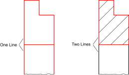

- Forbered de enheder, der omgiver skraveringsområdet, så de danner en
lukket kontur. Konturen skal være lukket på en sådan måde, at den ene enhed
er forbundet med den næste som vist til højre i dette eksempel:

- Vælg den eller de konturer, du vil udfylde. Bemærk, at øer inden for
konturer vil blive skraveret, hvis de ikke er valgt:

- Start skraveringsværktøjet.
- En dialogboks for skraveringsindstillingerne vises. Vælg et
skraveringsmønster, en skalafaktor og en rotationsvinkel for
skraveringsmønsteret. Hvis du vil fylde objektet med en fast farve i stedet
for et mønster, skal du markere afkrydsningsfeltet "Solid Fill" (fast
fyldning).
- Klik på "OK" for at fortsætte med skraveringen. Afhængigt af konturens
kompleksitet og skalafaktoren for det valgte mønster kan det tage et stykke
tid at oprette skraveringen.